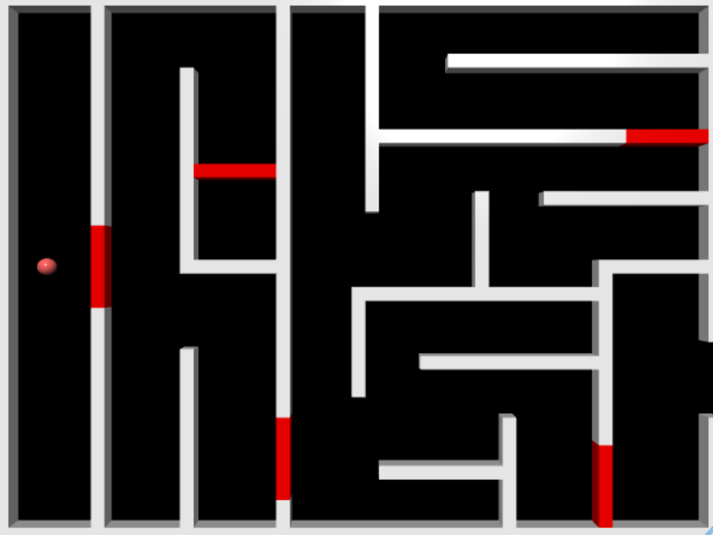
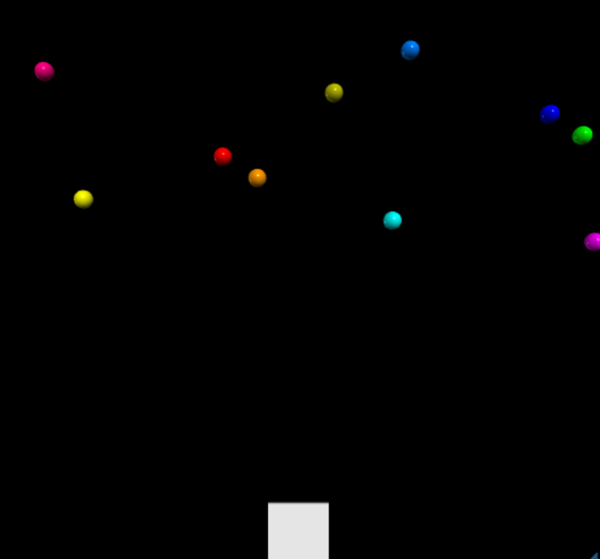
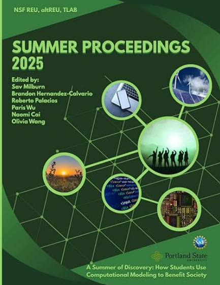

Projects

Escape the Maze
Created using VPython, this game was made for a physics class I took last year. In this game, players must avoid or destroy obstacles and navigate through the maze towards the exit to win.
View Project
Shoot the Puck
This game uses physics to simulate how force affects friction when shooting a puck. In this game, players must adjust the angle and speed of their puck to successfully reach the end.
View Project
Arcade Shooter
This game showcases more of what I learned regarding the integration of physics in video games using VPython. In this game, players must shoot the asteroids using the least amount of shots possible. The less shots they fire, the more points they get.
View Project
Investigating the Latest Status of Spanglish in Multilingual Large Language Models (MLLMs)
As part of my research internship with Portland State University, I wrote a research paper on code-switching in MLLMs. It was published in a collection housing the cohort's research papers.
View Project